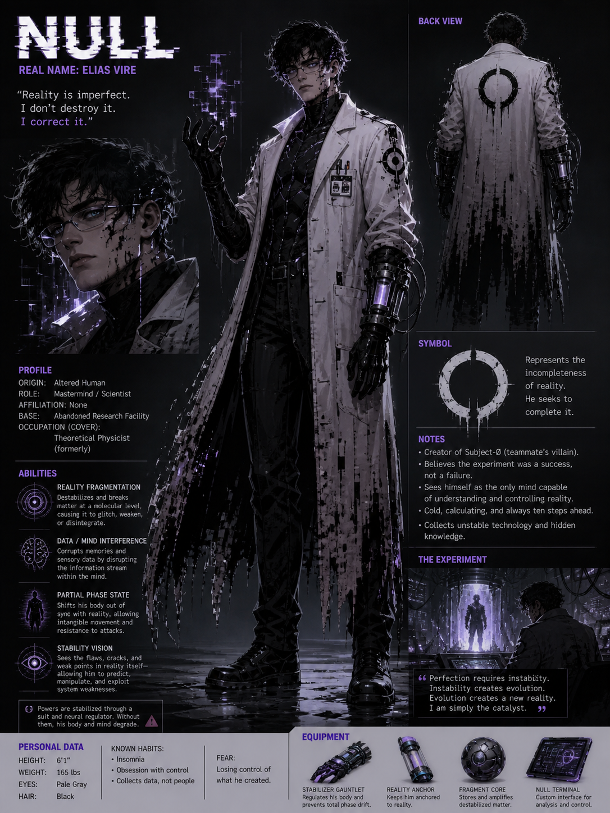
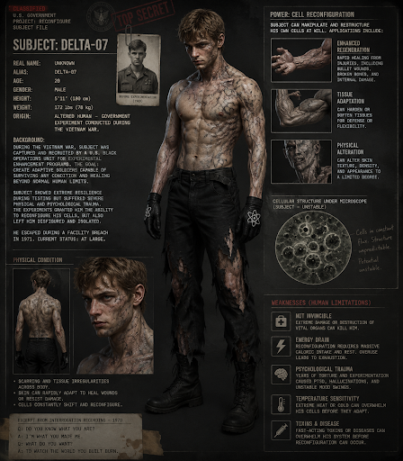
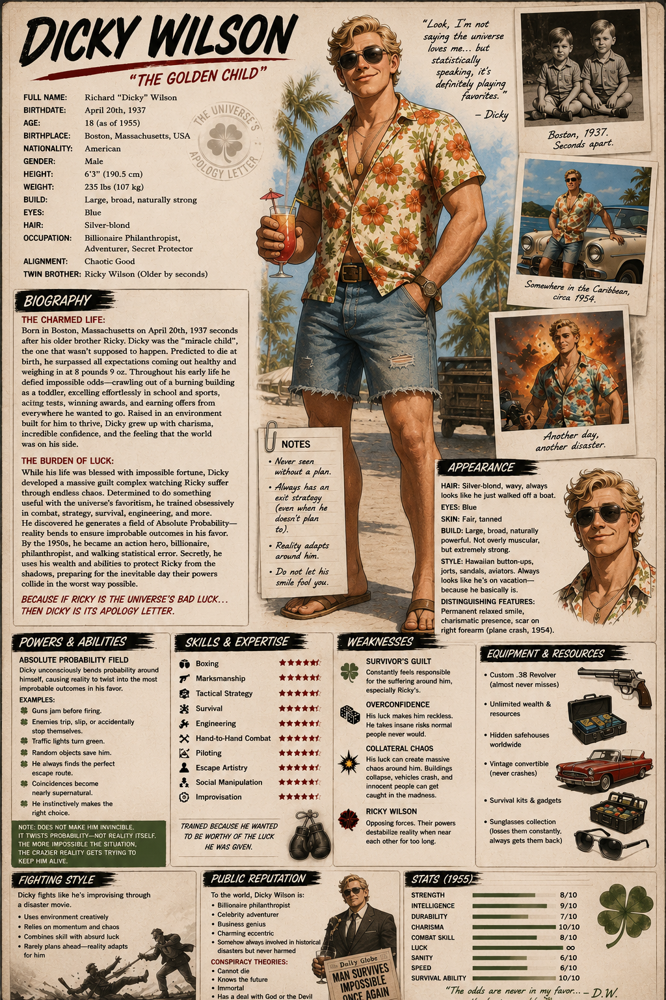
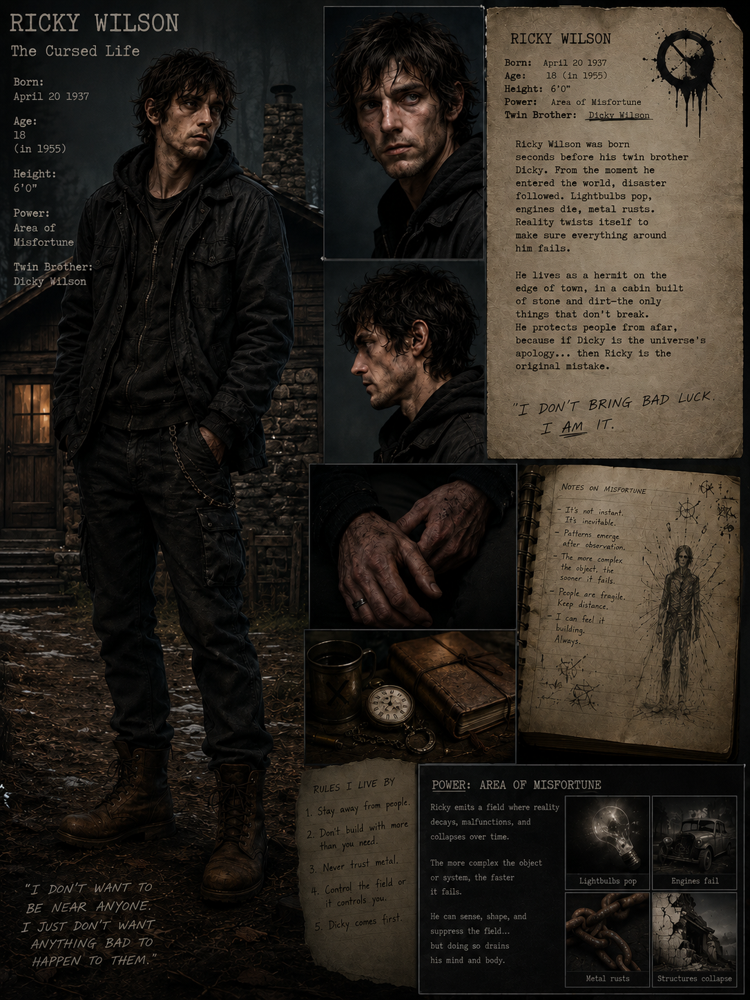
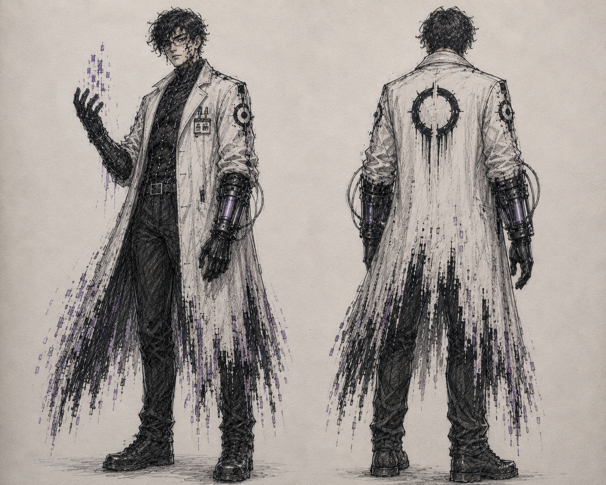

PROJECT NULL
CLASSIFIED: TOP SECRET
THE ORIGINS
The year was 1955. Beneath an unmarked military installation hidden somewhere in Boston, Massachusetts, hundreds of feet below the earth, the United States government funded a project that officially did not exist.
Scientists called it Project Null. To the military, it was an experiment in biological warfare and human enhancement. To Dr. Elias Vire, it was something far greater. It was proof that reality itself could be rewritten.
ELIAS VIRE
Elias Vire had spent his entire life searching for order in a world he believed was fundamentally broken. As a child, he was fascinated by systems, patterns, and invisible laws that governed the universe.
When his mother died from an unexplained neurological illness, something inside him fractured permanently. While others mourned, Elias obsessed over a single thought: if the universe followed rules, then death itself had to be another equation waiting to be solved. From that day forward, he no longer viewed reality as sacred. He viewed it as flawed.

THE MASTERMIND
NULL
By his twenties, Elias had become one of the most brilliant theoretical physicists in the country. His ideas were considered dangerous by most scientists, but irresistible to the government. He theorized that matter was not fixed, that under enough pressure the atoms composing reality could be destabilized and rewritten.
He called this unstable condition “the Null State.” To most people, it sounded impossible. To Elias, it was inevitable.
"Reality is imperfect. I don't destroy it. I correct it."
THE FUNDING
The government gave him unlimited funding, secret facilities, and absolute freedom. Deep underground, Project Null was born.
But Elias needed a human subject.
CHARLES RAY MOORE
That subject became Charles Ray Moore.
In 1935 a baby was born, one that would change the course of history forever. By the time he was 8, his dad became a raging alcoholic due to the family’s financial situation. His alcoholism caused distance between him and Charles. Every time Charles would talk to his father he would get hit or threatened; the times where he didn’t, his mother would take the beatings for him.

A BROKEN HOME
By the time Charles was 10, his mother tried to fight back, but his father ended up beating on her harder than he ever did. He would not hold back anymore and the beatings became more frequent.
When Charles was 11, his dad got arrested for assault and battery. That left the house with an unfamiliar quietness that brought guilt and hatred to both Charles and his mother. Soon this hatred started bubbling up between them; they once relied on each other to get through all the tough times, and now Charles' mother became distant and cold.
THE SOLDIER
DELTA-07
It is now 1953, Charles is 18 years old, and he decides to join the army. He feels as though he has nothing left to lose. He fought with no fear, or at least like someone who didn’t fear death. He wasn’t reckless but he wasn’t careful, talking back and not listening to orders from his superiors.
Despite his carelessness for the rules, he moved up quickly in ranks thanks to his great espionage tactics that helped the US during the Cold War. In 1955, he was sent off to fight in the Vietnam War, and with the help of his nihilistic point of view, he carried his squadron.
THE RECRUITMENT
Due to his behavior and work done during his years enlisted, he was called on by the president for a special project, a top-secret project that even his commanding officer didn't know about.
The president and Elias Vire introduced the project: it was a type of particle accelerator that was being tested as a weapon of mass destruction. The accelerator was supposed to enhance physical attributes and grant unimaginable strength.
Charles immediately agreed. After witnessing so many horrors, he hoped this machine would grant him death.
AND THEN THE EXPERIMENT BEGAN...
THE ACCELERATOR
Inside the chamber, enormous rings of energy ignited around Charles as the particle accelerator powered to life. At first, everything worked exactly as Elias predicted.
Energy surged through Charles’ body while streams of data flooded across the monitors. His heart rate stabilized. Cellular activity increased. The impossible was becoming reality.
Then something changed.

OVERLOAD
The machine began reacting not only to Charles’ body, but to his mind.
Years of trauma, rage, and survival instinct fed directly into the accelerator’s unstable energy field. The reactor started to overload as reality itself warped inside the chamber.
Gravity shifted. Steel bent inward. Lights flickered between existence and nonexistence. Alarms screamed through the facility.
THE IMPLOSION
Inside the chamber, Elias realized the horrifying truth. The accelerator was no longer obeying physics. It was reacting to consciousness itself.
Elias rushed toward the core manually, desperately attempting to stop the cascade before the entire facility collapsed. But he was too late.
The reactor imploded. Instead of exploding outward, the accelerator folded inward like reality collapsing into itself. A wave of blinding white light consumed the chamber. For several seconds, the underground facility simply disappeared.
THEN SILENCE.
THE ONLOOKERS
As Charles staggered forward from the burning ruins of Project Null, two figures watched from the treeline beyond the facility’s outer perimeter. One of them stood frozen in disbelief. The other smiled nervously, as if the universe had once again narrowly avoided catastrophe on his behalf.
Those two figures were Ricky and Dicky Wilson.
RICKY WILSON
Area of Misfortune
Born seconds before his twin. From the moment he entered the world, disaster followed. Lightbulbs pop, engines die, metal rusts. He emits a field where reality decays, malfunctions, and collapses over time.
He lives as a hermit on the edge of town, protecting people from afar. If Dicky is the universe's apology... Ricky is the original mistake.
"I don't bring bad luck. I AM it."
DICKY WILSON
Absolute Probability
The "miracle child". Blessed with impossible fortune, Dicky unconsciously bends probability around himself, causing reality to twist into the most improbable outcomes in his favor. Guns jam, traffic lights turn green, coincidences save him.
Determined to do something useful with the universe's favoritism, he became an action hero and secret protector of his brother.
"Statistically speaking, it's definitely playing favorites."
THE NIGHT IN QUESTION
Dicky had brought Ricky out of isolation that night. After years of hiding his older brother away from society because of the disasters that followed him everywhere, Dicky believed Ricky deserved to finally see the outside world again.
But miles away from Boston, hidden beneath the earth, Project Null was beginning its activation sequence at the exact same moment Ricky unknowingly wandered too close to the facility.


THE CATALYST
His field of absolute misfortune spread silently around him, twisting probability itself into disaster.
Inside the underground laboratory, the particle accelerator suddenly began malfunctioning in ways Elias Vire had never predicted. Cooling systems failed. Calibration readings corrupted. Electrical systems collapsed. What should have been the greatest scientific breakthrough in human history became a reality-shattering implosion.
THE AFTERMATH
As the reactor collapsed inward, Ricky and Dicky witnessed the impossible. Through the smoke and collapsing steel, Charles emerged first, his body cracking and reforming unnaturally with every step.
Behind him walked Elias Vire, flickering in and out of reality itself while the air distorted around him like broken glass. Neither man should have survived. Yet both walked away seemingly untouched.
AMPLIFICATION
At that exact moment, the residual energy released by the implosion surged through Ricky and Dicky as well. The explosion amplified what already existed inside them.
Ricky’s misfortune field became stronger and more uncontrollable, while Dicky’s impossible luck evolved into the power to subconsciously bend probability itself.
THE COVER-UP
The government immediately covered up the incident, declaring Project Null a catastrophic reactor failure that killed everyone involved. The facility was sealed, records were erased, and the world moved on.
But beneath abandoned Cold War bunkers and forgotten research stations, Elias and Charles survived in secret for the next three years. Elias became obsessed with studying the changes within their bodies, convinced the experiment had revealed humanity’s next stage of evolution.
AN UNSTABLE PARTNERSHIP
Unlike Charles, Elias fully embraced what the experiment had made them. He convinced Charles that the world had betrayed them both—the government tried to erase them, scientists wanted to dissect them, and ordinary people would fear them forever.
Null promised Charles something nobody else ever had: purpose. Together they began stealing reactor technology and rebuilding fragments of the original accelerator beneath abandoned factories and forgotten military bunkers.
THE SUFFERING
But over time, their partnership became increasingly unstable. Charles’ powers worsened with every passing month. His body constantly shifted and reconstructed itself in painful bursts, leaving him exhausted and angry.
Null, however, remained cold and fascinated by the process, recording every mutation like a scientist observing a lab rat. Eventually, Charles stopped seeing Elias as a partner and began seeing him for what he truly was: a man willing to sacrifice anyone for perfection.

THE WATCHERS
Meanwhile, Ricky and Dicky secretly monitored the two survivors from a distance over the next three years. Dicky used his wealth, charm, and absurd luck to gather information about strange events connected to Project Null, while Ricky stayed hidden from society.
Wherever Elias and Charles went, disasters followed. Entire laboratories mysteriously collapsed. Military convoys exploded without explanation. Witnesses reported seeing a flickering man accompanied by another whose body seemed to crack and reform like living stone.
PROTOTYPE ACCELERATOR
Three years after the original explosion, Elias finally completed a new prototype accelerator hidden beneath an abandoned industrial complex outside Boston. This version was smaller but far more unstable.
Null believed activating it again would permanently stabilize both their conditions and allow him to reshape reality itself. Charles agreed to help one final time, hoping the machine could finally end his pain.
THE INFILTRATION
At the same time, Ricky and Dicky discovered the location of the facility and realized another activation could destroy half the city if it failed.
The night of the activation, the brothers infiltrated the complex together.
COLLAPSE
As the reactor powered on, reality immediately began collapsing around the building. Hallways stretched unnaturally long, lights flickered between existence and nonexistence, and steel walls bent inward like paper.
Ricky’s field of misfortune spread uncontrollably through the facility, causing electrical systems to short-circuit and support beams to crack apart, while Dicky’s impossible luck somehow kept the two alive through the chaos. Bullets jammed before firing. Explosions missed them by inches. Entire ceilings collapsed everywhere except where they happened to be standing.

THE FINAL SHOWDOWN
At the center of the facility, Null and Charles stood beside the glowing reactor core as the machine spiraled out of control. For the first time in years, all four men faced one another.
Charles attacked first.

RAW FORCE
His body violently reconfigured itself into a monstrous form as he charged toward the brothers, tearing through steel walls with raw force. Dicky grabbed a loose metal pipe off the floor to defend himself...
But before Charles could reach him, one of the reactor’s overhead cranes suddenly snapped loose from the ceiling.
THE HOOK
The massive hook swung wildly across the chamber, smacking directly into the back of Charles’ head with ridiculous precision and launching him into a control panel.
At the exact same moment, another random system failure triggered an emergency fuel release valve. A pressurized pipe exploded directly beside Charles, sending him crashing backward into the unstable reactor core itself.
OVERLOADED BEYOND REPAIR
For a brief second, Charles looked genuinely confused.
Then his body began uncontrollably reconfiguring faster than ever before. Muscles, bones, and skin folded into themselves violently as the reactor overloaded his powers beyond repair.
AN EMBARRASSING END
After years of surviving everything imaginable, Charles Ray Moore died because an industrial crane accidentally swung into his head.
"That’s… honestly kinda embarrassing." - Dicky
NULL's DESPERATION
Meanwhile, Null completely lost control of the reactor. Furious and desperate, he blamed Ricky’s misfortune field for destabilizing the accelerator.
Reality fragmented around Elias as he attempted manually stabilizing the core with his gauntlet systems. But Ricky’s curse continued twisting probability itself against him.
CASCADING MALFUNCTIONS
First, one of Null’s radiation vials cracked after slipping from his hand.
Then another malfunction caused his Reality Anchor to short-circuit.
Finally, as Elias tried activating his Partial Phase State to escape the collapsing chamber, a tiny loose bolt from the ceiling—shaken loose by the reactor instability—fell directly into the exposed circuitry of his stabilizer gauntlet.
TOTAL DRIFT
The device exploded instantly.
Null froze in place as his body began phasing uncontrollably between realities. Sections of him flickered violently in and out of existence while the reactor chamber collapsed around him. He reached desperately toward the control terminal, trying to regain stability, but Ricky’s field twisted every possible outcome against him.
One final electrical surge shot through the chamber, overloading the Reality Anchor completely.
UNINSTALLED
And then Elias Vire simply… stopped existing.
Not dramatically. Not explosively.
One moment he was there. The next moment there was only empty space where he had been standing.
Ricky blinked awkwardly.
Dicky looked around the room.
"Did… did he just uninstall himself?"
ERASED FROM EXISTENCE
Seconds later, the accelerator imploded one final time, consuming the entire facility beneath a sphere of white light. Ricky and Dicky barely escaped the collapsing complex as the underground structure folded into itself and vanished beneath the earth forever.
Official reports blamed the destruction on an illegal chemical explosion inside the abandoned factory. The truth was buried once again alongside Project Null itself. Charles Ray Moore and Elias Vire were never officially found, and the world moved on without ever learning how close reality itself came to collapsing.
THE UNIVERSE'S SENSE OF HUMOR
But Ricky and Dicky never forgot.
Because somewhere deep down, both brothers understood something terrifying:
THE TRUTH
The universe did not defeat Null and Charles through strength, heroism, or destiny.
It defeated them through pure dumb luck and unbelievably bad timing.
THANK YOU
END OF DOSSIER